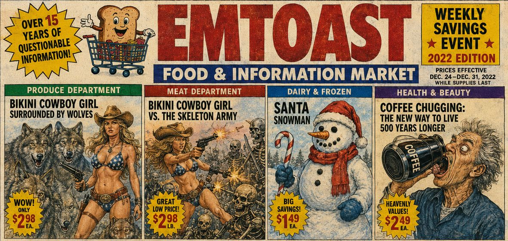

EMToast: The Final Days of EMToast.com (2022–2023) | Podcast Deep Dive


EMToast: The Final Days of EMToast.com (2022–2023) explores the closing chapter of the original EMToast website, where AI-generated artwork, bizarre recurring characters, surreal storytelling, and internet absurdity reached their peak before the transition away from EMToast.com.
In this episode, we revisit The Art of the Folked, the Danny DeVito Terminator Lifestyle saga, Taylor Swift Bearded Woman, Nicolas Cage as Abraham Lincoln, sentient toast, robot parades, Bikini Cowboy Girl, and dozens of increasingly surreal creations that transformed EMToast into a one-of-a-kind digital art project during its final years on the original domain.
Read the original posts discussed in this episode:
EMToast Timeline:
https://emtoa.st/yearly-timeline/
2022 Archive:
https://emtoa.st/yearly-timeline/#year-2022
2023 Archive:
https://emtoa.st/yearly-timeline/#year-2023
Visit EMToast:
https://emtoa.st/
Graphics from this episode are below:
{kind=link}
{kind=link}
{kind=link}
{kind=link}
{kind=link}
{kind=link}
{kind=link}
{kind=link}
{kind=link}
{kind=link}
{kind=link}
{kind=link}
{kind=link}
{kind=link}
{kind=link}
{kind=link}
{kind=link}
{kind=link}
{kind=link}
{kind=link}
{kind=link}
{kind=link}
{kind=link}
{kind=link}
{kind=link}
{kind=link}
{kind=link}
{kind=link}
{kind=link}
{kind=link}
{kind=link}
{kind=link}
{kind=link}
{kind=link}
{kind=link}
{kind=link}
{kind=link}
{kind=link}
EMToast: The Final Days of EMToast.com (2022–2023) Transcript:
HOST 1: Okay, are you ready to get seriously weird? Because today we're diving headfirst into the depths of EMToast.com. This website feels like opening a portal where you can't tell if the internet is glitching—or if you've accidentally stepped into another dimension.
HOST 2: That's honestly the perfect description. What we've got here is an entire year's worth of EMToast posts, and I've never seen anything quite like them. Imagine a digital scrapbook filled with bizarre images, cryptic ramblings, surreal short stories, and ideas that seem to exist purely because someone thought they'd be funny.
00:15
HOST 1: They're definitely funny... but they're also kind of unsettling. Sometimes you're not even sure if you're laughing with the site or at it.
HOST 2: Before we spiral into an existential crisis, let's start with something that appears throughout these years: The Art of the Folk. It's everywhere on EMToast, and it really defines the site's unique style during this period.
00:30
HOST 1: Right. Take something like Taylor Swift Bearded Woman. It's absurd, obviously, but it also pokes at our obsession with celebrity culture and our expectations of beauty.
HOST 2: Exactly. It takes something instantly recognizable and twists it just enough to make your brain stop for a second. Then you have things like Nicolas Cage as Abraham Lincoln, where history, pop culture, and internet memes all collide into one ridiculous image that somehow works.
00:45
HOST 1: It's strange because none of it should make sense, yet somehow it feels completely at home on the internet.
HOST 2: And that raises an interesting question. Why call it The Art of the Folk?
HOST 1: Yeah. What does that even mean?
HOST 2: Maybe it's acknowledging that this isn't traditional fine art. It's internet folk art—created outside the mainstream, unconcerned with galleries or critics, and made simply because someone wanted to create something weird.
01:00
HOST 1: Or maybe it's commenting on how the internet turned everyone into an artist. Suddenly anyone with enough imagination could make something bizarre and share it with the world.
HOST 2: Which brings us to one of the site's strangest ongoing stories: The Danny DeVito Terminator Lifestyle.
01:15
HOST 1: Ah yes—the continuing adventures of Danny DeVito becoming a cyborg.
HOST 2: It's an entire saga that runs across multiple posts through late 2022. At first it's just a ridiculous premise, but then it gradually becomes darker. Danny isn't just pretending anymore—he's trapped inside this Terminator lifestyle, unable to escape.
01:30
HOST 1: There are references to mysterious "big people" getting involved, conspiracies, and this growing sense that everything is slipping out of control.
HOST 2: Which feels very appropriate for 2022. The pandemic was winding down, but people were still dealing with uncertainty. Political tensions were everywhere. AI was starting to dominate conversations. Climate anxiety was growing.
01:45
HOST 1: So beneath the comedy, there's this reflection of how uncertain everything felt.
HOST 2: Exactly. EMToast uses absurd humor almost like a coping mechanism. It exaggerates the chaos until it becomes funny.
02:00
HOST 1: And somehow, even while Danny DeVito is becoming the Terminator, EMToast never forgets its favorite subject.
HOST 2: Toast.
HOST 1: Naturally.
02:15
HOST 2: Except now toast isn't just toast anymore. Suddenly you're reading titles like Can Toast Grow a Mustache? or wondering whether toast itself is secretly running the website.
HOST 1: It evolves into this bizarre recurring character. Eventually the toast becomes almost self-aware, making these strangely philosophical observations.
02:30
HOST 2: One line even suggests that "the humans left long ago."
HOST 1: Which is hilarious... and slightly terrifying.
HOST 2: It taps directly into modern anxieties about artificial intelligence. What happens when something we create becomes aware of itself?
02:45
HOST 1: It's funny because the idea is ridiculous—a sentient slice of toast—but the underlying question isn't ridiculous at all.
HOST 2: Right. It's asking the same questions people were beginning to ask about AI. What happens when our creations start acting independently? When do they stop being tools?
03:00
HOST 1: That naturally leads to another mystery: who's actually behind EMToast?
HOST 2: That's one of the biggest puzzles. Despite years of content, the creator remains almost completely anonymous.
03:15
HOST 1: No detailed biography. No social media presence. Nothing that really explains who's making all of this.
HOST 2: It's like trying to investigate a ghost.
HOST 1: Do you think that anonymity actually helps the project?
03:30
HOST 2: Absolutely. Without a public identity attached, the creator has complete freedom to experiment. They can post surreal art one day, fake news the next, then philosophical toast the day after.
HOST 1: There's no reputation to protect. No expectations to satisfy.
03:45
HOST 2: Yet every once in a while, the creator almost breaks character.
HOST 1: Like when they joke about the Bikini Cowboy Girl artwork and basically ask why anyone would spend time making something so ridiculous.
HOST 2: That little moment of self-awareness changes everything. Suddenly you're thinking not just about the content—but about why someone keeps making it.
04:00
HOST 1: Is EMToast trying to say something about internet culture?
HOST 2: Is it simply an experiment in absurdity?
HOST 1: Or is it actually revealing something about the anonymous creator behind it?
04:15
HOST 2: That's what makes these years so fascinating. The website encourages you to connect impossible dots—Danny DeVito, sentient toast, Bikini Cowboy Girl—and somehow your brain starts searching for meaning anyway.
HOST 1: Whether that meaning was intentional or not almost becomes irrelevant.
04:30
HOST 2: Because EMToast captures something genuine about the modern internet. It's entertainment, information overload, meme culture, AI experimentation, and complete nonsense all existing together in the same place.
HOST 1: And just when you think you've figured out what the website is trying to do...
HOST 2: ...it throws another curveball.
04:45
HOST 1: Take the Robot Parade stories, for example. They become darker and darker as they go. What starts as something silly gradually turns into something almost dystopian.
HOST 2: They really reflect the anxieties people were feeling at the time—technology advancing rapidly, climate concerns, social division, and this lingering uncertainty about the future. Even when the stories are ridiculous, they're tapping into something very real.
05:00
HOST 1: What's impressive is that EMToast never abandons the humor. Even when it's exploring darker ideas, there's always this layer of absurdity that keeps everything entertaining.
HOST 2: Exactly. It never tells you what to think. It simply throws all these strange ideas together and invites you to make sense of them yourself.
05:15
HOST 1: It's a little like Alice in Wonderland. You're completely lost, but somehow that's part of the experience.
HOST 2: Which raises another interesting question. Is all of this really random... or is EMToast actually a carefully constructed art project?
05:30
HOST 1: That's something I kept wondering while reading through these posts. Maybe all these strange combinations aren't accidental at all.
HOST 2: When you step back and look at the website as a whole, it doesn't really behave like a traditional blog. It's not organized around topics or chronology. Instead, it feels more like a stream of consciousness—a digital dream journal.
05:45
HOST 1: That's a great way to describe it. Reading EMToast feels like opening someone's old memory box. Inside are dozens of random objects that clearly meant something to them, even if you don't immediately understand why.
HOST 2: Exactly. And somehow that creates this unexpected feeling of nostalgia.
06:00
HOST 1: Which is funny because the content itself is completely bizarre.
HOST 2: Yet it reminds you of the early internet. Chain emails. Strange Flash animations. Message boards. Those early memes that made absolutely no sense but somehow spread everywhere.
HOST 1: Before algorithms decided what everyone should find funny.
06:15
HOST 2: Maybe that's really what EMToast is preserving. A version of the internet where creativity didn't have to follow trends or optimize for engagement.
HOST 1: Just one person making weird things because they wanted to.
06:30
HOST 2: And whether it's Danny DeVito becoming the Terminator, sentient toast questioning humanity, or Bikini Cowboy Girl existing for reasons no one can explain, it all becomes part of this strange digital museum.
HOST 1: A museum where nothing makes sense individually—but somehow everything belongs together.
06:45
HOST 2: That's why I think these final years of EMToast.com feel so significant. They represent the culmination of everything the site had been building toward over more than a decade.
HOST 1: The fake news, the surreal fiction, the recurring characters, the AI artwork—it all merges into one unmistakable style.
07:00
HOST 2: And that's probably why it's so difficult to describe EMToast to someone who's never seen it.
HOST 1: You almost have to experience it yourself.
HOST 2: Exactly. Trying to explain it sounds ridiculous. But once you spend some time exploring the site, you start recognizing the patterns and the humor underneath all the chaos.
07:15
HOST 1: Which brings us back to the creator. Even after all these years, we still don't really know who they are.
HOST 2: And honestly, maybe that's part of the appeal. The mystery lets the work stand on its own.
07:30
HOST 1: There's no personality driving the website. No influencer. No brand strategy. Just the content.
HOST 2: Which is becoming increasingly rare on today's internet.
07:45
HOST 1: As strange as EMToast can be, it reminds us of an earlier web where people simply made things because they thought they were funny—or interesting—or wonderfully bizarre.
HOST 2: And maybe that's why the site still feels so refreshing today.
08:00
HOST 1: So what have we learned from this deep dive into the final years of EMToast.com?
HOST 2: That the internet is still one of the greatest places for creativity to flourish. Even amid algorithms, AI, and constant noise, there's still room for imagination, experimentation, and wonderfully weird ideas.
08:15
HOST 1: Sometimes those ideas involve sentient toast.
HOST 2: Sometimes they involve Danny DeVito embracing the Terminator lifestyle.
HOST 1: Sometimes they involve celebrity mashups that nobody asked for.
HOST 2: And somehow they all become part of the same universe.
08:30
HOST 1: More importantly, they remind us that absurdity has value. It makes us laugh, but it also encourages us to question what we're seeing and why it resonates.
HOST 2: That's something the internet could probably use a little more of.
08:45
HOST 1: As the original EMToast.com era comes to a close, it feels like the end of a very particular chapter in internet history.
HOST 2: A strange chapter... but an unforgettable one.
09:00
HOST 1: Whether you see EMToast as comedy, digital art, internet archaeology, or simply organized chaos, it's difficult to find anything else quite like it.
HOST 2: It stands as a reminder that some of the most memorable corners of the web were never trying to go viral. They simply existed because someone enjoyed creating them.
09:15
HOST 1: So we'll leave you with this thought. Keep exploring those forgotten corners of the internet. You never know what strange ideas—or unexpected inspiration—you might discover.
HOST 2: Thanks for joining us for this deep dive into the final days of EMToast.com.
HOST 1: Until next time...
HOST 2: Keep embracing the weird.
Related posts

EMToast: Top 10 Zombie Sightings
To prepare for the upcoming Halloween celebrations, EMToast has done extensive market research and delved deep into EMToast personal memory…
EMToa.st: The Successor to EMToast.com
The EMToast project has launched https://emtoa.st as its new primary domain, retiring the original emtoast.com address. The domain change closes…

Mario Finally Retires from Jumping After 40 Years
After 40 long years of tirelessly jumping over obstacles and enemies, Mario has announced his retirement from jumping. The Italian…

Podcast: Why EMToast Has Survived Since 2008
Well friends, we've been feeding the content of EMToast directly into AI to see what kind of scrambling can be…